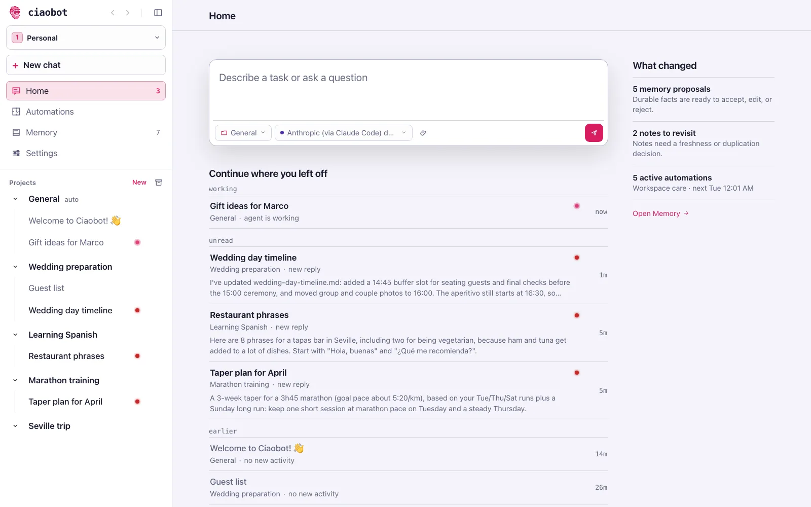
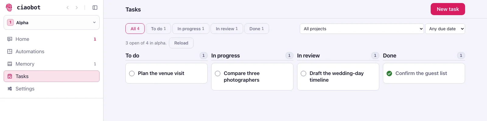
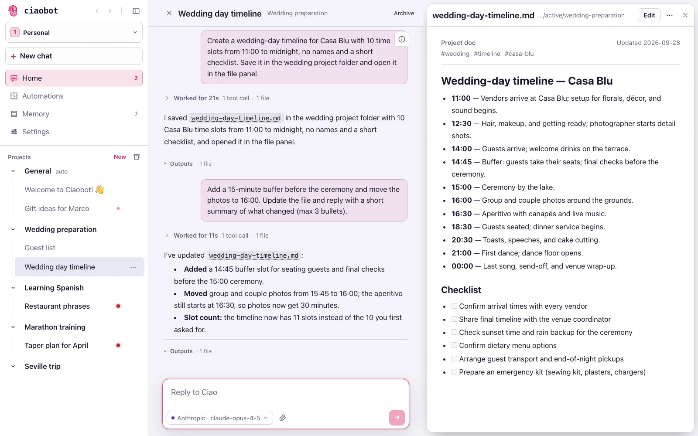
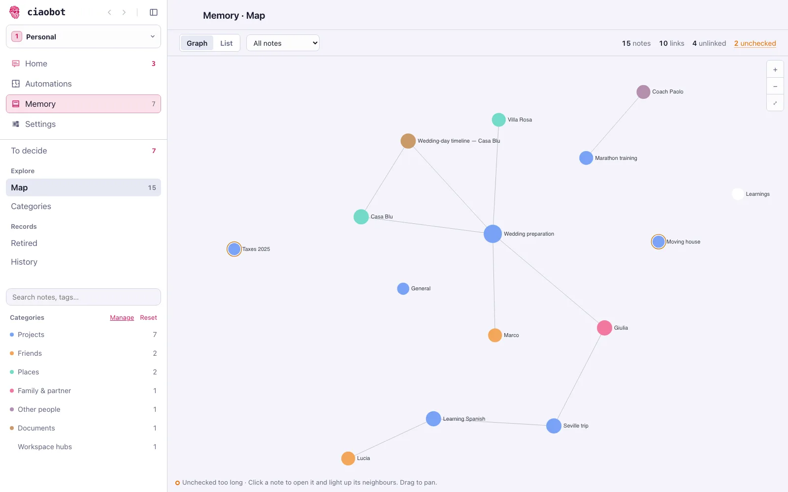
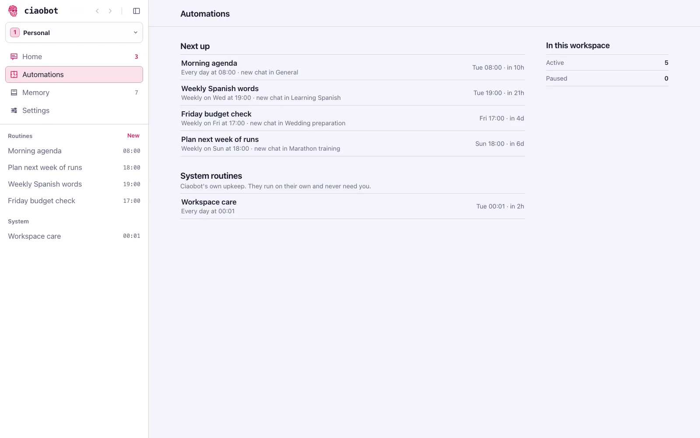
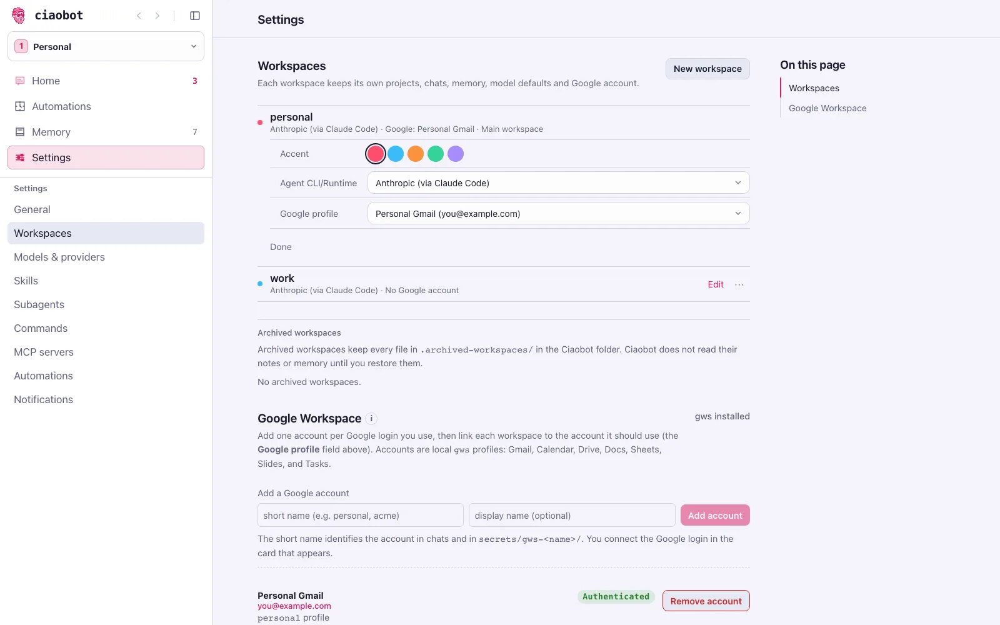
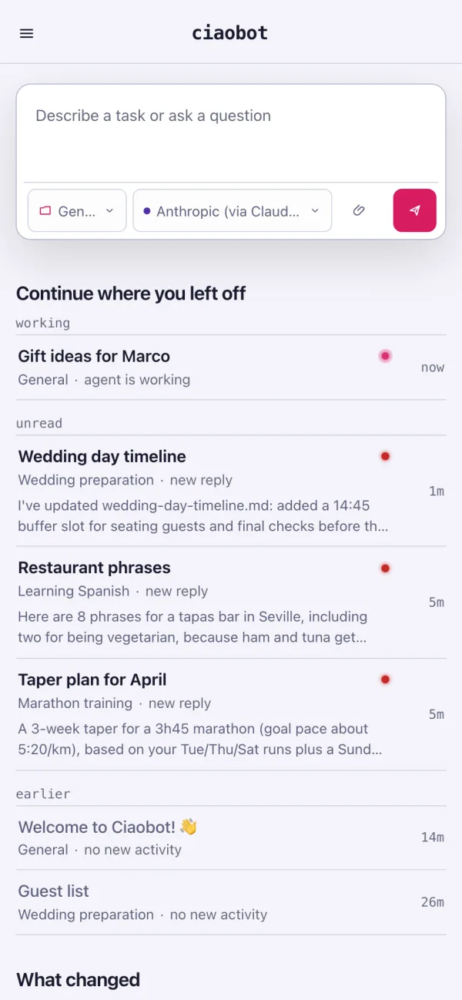

Features
What Ciaobot can do, and how to use it
Every screenshot below is the real app, with the quickest way to use each feature.
Stay organised
Workspaces, projects and chats
Separate the big areas of your life into workspaces (Personal, Work, a client), each with its own memory. Inside, a project holds the background for a topic, and each chat is one task.
Home has a box to start a task right away, and below it what needs you: chats still working, unread answers, then the quiet ones. A side column shows what changed in memory and automations. When a project is done, mark it Complete: it leaves the sidebar, and its notes stay in memory.
How: New next to Projects in the sidebar, New chat for a chat (⌥+N), keys 1–9 to switch workspace. Or ask: "Create a project called Moving house".


Tasks you can track and delegate
Keep the next steps in each workspace on a board: To do, In progress, In review and Done. Add a description, a project and a due date, and choose whether you or the agent will do the work.
Delegate to agent shows you what will be sent before starting a chat. Follow the work there and answer when it needs you. When the agent reports the task finished, the result waits for your review; Approve Done closes the task.
Approving a task asks for a resolution note, or an explicit complete without one. While a task is in progress, you or the working agent can add progress notes, which later resumes read. Completing a project asks whether it was completed or stopped, with an optional note.
Task records stay in your vault as plain Markdown, alongside the context and notes they belong to.
How: Tasks in the sidebar, then New task. Open a task and choose Delegate to agent to have Ciaobot work on it.


Work on real files
Documents side by side
When Ciaobot writes a note, a plan or a table, it opens next to the chat. Ask for a change and watch the file update. Tables (CSV) are editable, and you can comment on a single cell.
To point at something precisely, highlight any passage, in the document or in the chat, and add a comment. The comment goes out with your next message, so "make this friendlier" knows exactly what "this" is.
Word, PowerPoint, Excel and PDF files you attach are converted to Markdown with AnyDoc, so the assistant can work from their contents rather than a filename. AnyDoc is included with Ciaobot; conversion happens when a supported document is attached.
Links work too: Ciaobot reads web pages directly, stripping menus and ads. It can read available YouTube captions; GitHub links use gh instead. Nothing to install — no separate CLI and no Node.js on the host.
How: ask for a document ("write the wedding-day timeline as a note"). Open any file card and use Pin to sidebar to keep it beside the chat. Drop in a supported office file or PDF to have Ciaobot read it.


Your second brain
Memory you can see and correct
Archive a chat and Ciaobot files what matters: a decision in the project note, a detail on a person's note, a preference in its short core memory. Anything it's unsure about waits for you in To decide.
The Memory view shows every note as a map of connections, and most changes can be undone.
How: Memory in the sidebar. Or ask: "Remember that I'm allergic to penicillin". How memory works →


Let it work on its own
Automations
If you do something more than once, schedule it. A morning agenda, weekly vocabulary, the Monday status draft. Each run leaves its result in a chat for you to read, just like a message from an assistant.
Runs can be one-off, daily, weekly, monthly, every few minutes, or manual. One system routine ships with Ciaobot: Workspace care tidies memory every night and files what it can. Anything that needs your call, including suggested improvements to your own skills, waits in To decide for you to accept or dismiss.
How: Automations in the sidebar, then New. Or ask: "Every weekday at 8, tell me what's on my calendar". Ciaobot shows you a draft before creating it.


Let other tools start the work
Webhook triggers
An automation runs at a time you pick. A webhook trigger runs when another tool tells it something happened: a build failed on GitHub, a form came in through Zapier, an n8n or Make workflow finished, Home Assistant saw the front door open. Each event opens a new chat that gets to work straight away.
You write the trigger's instructions once ("When a build fails, read the log, find the commit that broke it and draft a fix"). The sending tool adds the details for each event, such as the error, an order number or a link. The chat starts with your instructions and those details shown as quoted data. A sender can pass in data, but it can't add instructions or pick the workspace, project or model.
Any tool that can send an HTTP request works: a step in a GitHub Actions workflow, an HTTP node in n8n, Zapier's or Make's webhook action, a Home Assistant automation, a shell script. GitHub's built-in repository webhooks send their own format, so call Ciaobot from an Actions step instead. The sender has to be able to reach the computer Ciaobot runs on. For a cloud service, that means a route onto your Tailscale network, for example Tailscale's GitHub Action, or a self-hosted n8n on the same network.
How: Automations in the sidebar, then Webhook triggers. Create one, copy its secret (it is shown only once), switch it on, and paste the URL and secret into the other tool. Or ask: "Set up a webhook so a failed nightly build opens a chat that finds the cause".
curl -X POST "http://100.101.102.103:8443/hooks/v1/$TRIGGER" \
-H "Authorization: Bearer $SECRET" \
-H "Idempotency-Key: build-4821" \
-H "Content-Type: application/json" \
-d '{"text": "Nightly build failed on main: test_auth timed out"}'text.Mail, calendar, documents
Google Workspace, built in
An assistant needs your calendar and inbox. Ciaobot works with Google's own command-line tool, gws, and ships ready-made skills for Gmail (read, triage, reply, send), Calendar, Drive, Docs, Sheets, Slides, Tasks and Forms.
Add as many Google accounts as you need and link one per workspace: your personal Gmail in Personal, your company account in Work.
How: Settings → Workspaces → Google Workspace. Then just ask: "What's on my calendar tomorrow?"


Stay in control
File access
Each workspace decides how much of your computer its agent can read. Workspace only keeps the agent's shell and file tools inside that workspace's folder. Whole machine lets it read any file you can read. A workspace with no File access choice uses Workspace only on macOS and Linux, and Whole machine on Windows, which has no sandbox.
Workspace only does not limit the network: the agent can still reach the internet and Ciaobot's own command-line tool. On Linux, the sandbox needs a one-time AppArmor setup on Ubuntu 23.10 and later (see the Linux guide in the GitHub repository).
How: Settings → Workspaces → Edit, then File access. Each workspace row shows the value in effect.
Wherever you are
From any device
Ciaobot runs on one computer, your Mac at home or a small rented server, and every other device is a window onto it. Your phone gets the same chats, projects and memory, and can be added to the home screen like an app.
A cheap VPS (for example from Hostinger) makes an always-on host that's reachable from everywhere, even when your laptop is closed.
How: Use it anywhere →

